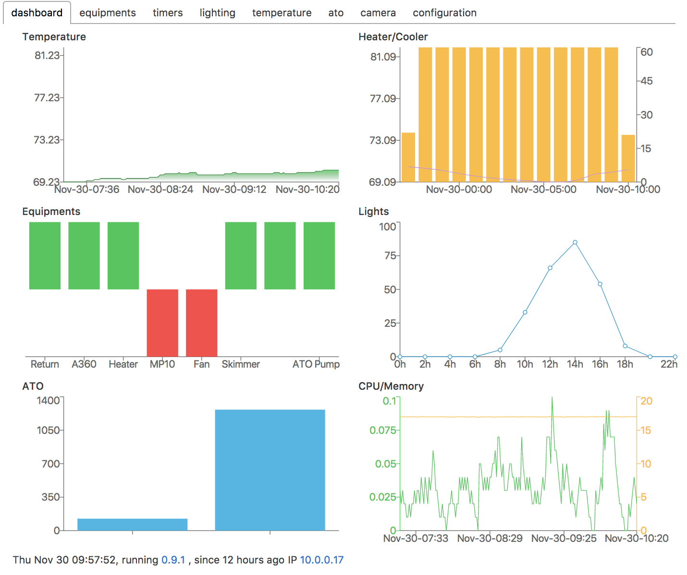
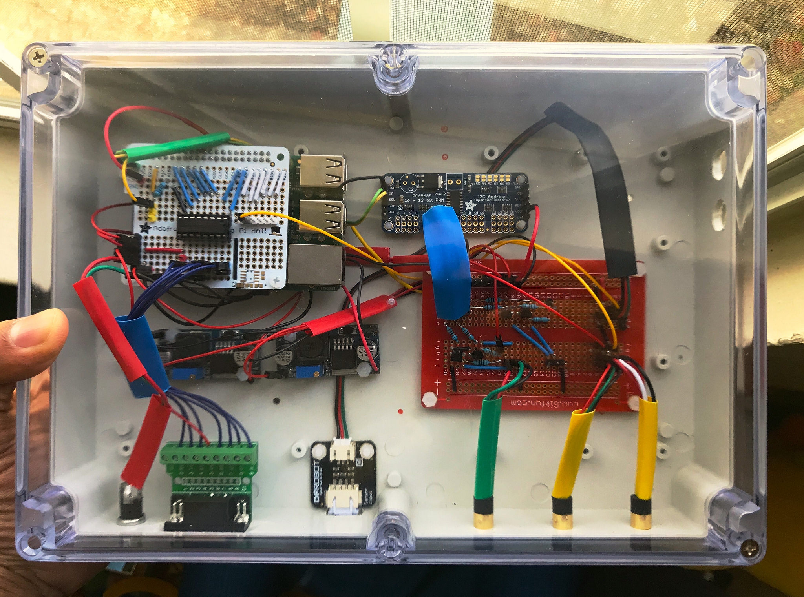

Welcome to the official website of reef-pi, an opensource reef tank controller based on Raspberry Pi
|  |  |
reef-pi is a modular, affordable and extendable DIY controller that can automate day to day reef keeping chores such as auto top off, temperature control, dawn to dusk light cycle, automated dosing, ph monitoring and more.
reef-pi project provides opensource software, parts list and documentation for building the physical controller. Users build the physical controller using these guides and software.
The guides section provides documentation on how to build a reef-pi controller.
Checkout additional resources for helpful articles, tutorials and other's build threads involving reef-pi.
reef-pi software development happens on github. A comprehensive development environment setup guide is also available if you are interested. reef-pi's ongoing development can be followed at reef2reef master thread. Website specific bugs & improvements can be reported here. For general enquiry, contact at @reef_pi or by email